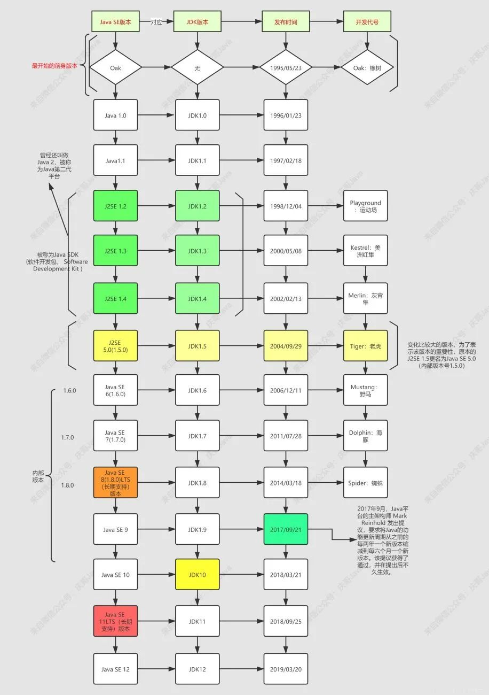

[toc]
java_temp
temp
java 中String直接赋值字符串和new String的区别，
== 为false，equals结果为true，如果放在同一个hash中只能放一个
String A = "abc" 会在常量池子中找是否已经有了，如果没有它就会重新开辟一片空间，然后所有这么赋值的地址其实都是相同的
String str = new String("abc") 这么赋值的是再次构造一个String对象，从堆中重新new一块内存，再把指针赋给栈，==是判断地址，则明显会不相同的
data method 现在的编辑的bug：打开编辑页面没有把数据读出来，detail框有问题
http 错误
2xx 成功 200 正常；请求已完成。 201 正常；紧接 POST 命令。 202 正常；已接受用于处理，但处理尚未完成。 203 正常；部分信息 — 返回的信息只是一部分。 204 正常；无响应 — 已接收请求，但不存在要回送的信息。 3xx 重定向 301 已移动 — 请求的数据具有新的位置且更改是永久的。 302 已找到 — 请求的数据临时具有不同 URI。 303 请参阅其它 — 可在另一 URI 下找到对请求的响应，且应使用 GET 方法检索此响应。 304 未修改 — 未按预期修改文档。 305 使用代理 — 必须通过位置字段中提供的代理来访问请求的资源。 306 未使用 — 不再使用；保留此代码以便将来使用。 4xx 客户机中出现的错误 400 错误请求 — 请求中有语法问题，或不能满足请求。 401 未授权 — 未授权客户机访问数据。 402 需要付款 — 表示计费系统已有效。 403 禁止 — 即使有授权也不需要访问。 404 找不到 — 服务器找不到给定的资源；文档不存在。 407 代理认证请求 — 客户机首先必须使用代理认证自身。 415 介质类型不受支持 — 服务器拒绝服务请求，因为不支持请求实体的格式。 5xx 服务器中出现的错误 500 内部错误 — 因为意外情况，服务器不能完成请求。 501 未执行 — 服务器不支持请求的工具。 502 错误网关 — 服务器接收到来自上游服务器的无效响应。 503 无法获得服务 — 由于临时过载或维护，服务器无法处理请求。
Tomcat 简单概念网址：Tomcat
Tomcat 简单的说是一个运行 Java 的网络服务器，底层是 Socket 的一个程序，它也是 JSP 和 Serlvet 的一个容器

axios 是一个基于 promise 的 HTTP库，简单的讲就是可以发送get、post请求，因为Vue等框架，不需要操作Dom了，所以不需要引入Jquery.js 了？所以一些轻量级库的就跟着出现了
mongo4.4 版本之后，mongodb数据库工具与现在的mongodb服务分开发布，需要单独安装
快速导出接口文档
方案：
- 使用 japidocs
- swagger + knife4j
- 开源接口文档生成工具
前言
常常在项目收尾阶段，客户需要项目的接口文档，或则是一个大的sass平台，各个产品之间互相调用的时候，需要对方提供接口文档。通常来说，接口文档属于产品的技术沉淀，是一个长期积累的过程，然后开发阶段并不会想这么多，结果到了需要接口文档的时候总是疲于应付，情急之下，往往采用最笨拙的方法，就是对照着项目代码一个一个拷贝
该文提供了几种方法的策略
JapiDocs
这是一种最简单也最高效的快速生成接口文档的方式，也是对既有项目改造代价最小的方式
- 可用于生成spring boot api文档
- 读取JAVA DOC注释，无需额外的代码改造
使用步骤原文已经很清楚了
- 添加依赖
- 添加一个类，并写一些代码，运行
swagger + knife4j
swagger 很出名的一个插件，用以快速进行接口调试，但是单纯使用swagger的效果并不理想（如导出文档这一块），这时候都会配合 knife4j 使用
步骤：
- 导入依赖
- 添加 swagger 配置类
- 访问接口页面
开源方案
- japi
- ApiPost 工具
Java 版本
Java 与 jdk 的区别： 在用户眼中，Java 是 Java 应用，在程序员眼中，jdk 是Java 开发工具，所以 jdk 等价于 Java
- jdk 8 与 jdk 1.8 的区别和联系：jdk 8 或者 jdk 1.8 是由于自从 jdk1.5/jdk5 命名方式改变后遗留的新旧命名方式问题，所以 jdk 8 或者 jdk 1.8 也是同一个东西
